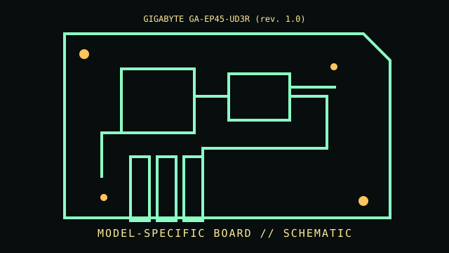

[ INDIVIDUAL COMPONENT // MOTHERBOARDS ]
GIGABYTE GA-EP45-UD3R (rev. 1.0)
LGA775 / Intel P45 + ICH10R, 2008. This entry documents one exact board model/revision; its specifications are not interchangeable with similarly named variants.

REVISION WARNING: Confirm the PCB silk-screen, assembly/AA code and firmware ID on the actual board. Where documentation does not identify one PCB spin, this record states the exact documented model and explains the revision distinction below.
Specifications
| Exact model / revision | GA-EP45-UD3R PCB revision 1.0 |
|---|---|
| CPU / socket | LGA775 Intel Core 2, Pentium and Celeron families; exact FSB/stepping support is revision and BIOS specific |
| Chipset / platform | Intel P45 Express northbridge + ICH10R southbridge |
| Memory | Four DDR2 DIMM slots, dual-channel, up to 16 GB under board documentation; module speed depends on CPU/OC settings |
| Form factor | ATX |
| I/O and expansion | Two PCIe x16-length slots (electrical lane assignment varies), PCIe x1 and PCI, SATA 3 Gb/s, IDE, IEEE 1394, Gigabit LAN and audio |
| Firmware compatibility | Award DualBIOS; use BIOS files for rev. 1.0 only, and heed CPU-list minimum BIOS |
Compatibility and revision pitfalls
GA-EP45-UD3R is not UD3/UD3P and revisions 1.0, 1.1, 1.6 etc. can have separate firmware. Confirm rev. printed on the lower PCB edge before downloading BIOS; overclocked FSB and DDR2 settings are not stock compatibility guarantees.
Socket fit alone is not proof of support. Confirm the manufacturer CPU support list, the board's minimum BIOS, memory population table, and exact chassis/power requirements before operation.
Preservation notes
Retain both original BIOS chips/backup behavior, note CMOS settings and CPU list entry, and inspect the heatpipe/VRM area and SATA connectors. Photograph revision marking and expansion layout.
Record provenance, date/serial codes, board and firmware revision, known repairs and test conditions. Photograph labels and connectors before cleaning or component removal; retain original firmware and configuration data when possible.
Sources & further reading
- GIGABYTE GA-EP45-UD3R rev. 1.0 support — manual, BIOS and CPU listOfficial revision-specific product support page. Select the manual, CPU support and BIOS for rev. 1.0.
- GIGABYTE GA-EP45-UD3R manual and CPU support archiveManufacturer product record; retain revision context when using its downloadable files.
Manufacturer manuals, CPU lists and archived primary documents take precedence over reseller summaries. If an archived support page omits a revision-specific file, do not assume another revision's firmware is compatible.